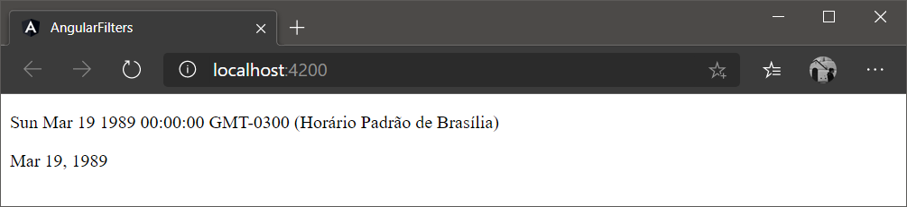

Filtros servem para formatar dados. Eles são utilizados nos templates dos componentes, geralmente para apresentar datas e valores monetários em um formato familiar para os usuários.
Por exemplo, com o filtro date é possível formatar uma data para um formato familiar para o usuário, como vemos no código abaixo.
Nele temos a propriedade hoje do componente AppComponent sendo apresentada de duas formas. A primeira delas é sem nenhum filtro, onde usamos a sintaxe conhecida { { hoje } } para apresentar a propriedade. A segunda é aplicando o filtro date e para fazer isso usamos a sintaxe { { hoje | date } } , onde | é o operador pipe e date é o filtro que queremos aplicar.
// app.component.ts
import { Component } from '@angular/core';
@Component({
selector: 'app-root',
templateUrl: './app.component.html',
styleUrls: ['./app.component.css']
})
export class AppComponent {
hoje = new Date(1989, 2, 19);
}
<!-- app.component.html -->
<p>{{ hoje }}</p>
<p>{{ hoje | date }}</p>Utilizando o filtro date nativo
O resultado desses valores sem filtro, { { hoje } } , e com filtro, { { hoje | date } } pode ser visto na figura abaixo.

Note que Sun Feb 09 2020 12:38:03 GMT-0300 (Horário Padrão de Brasília) é como uma data e apresentada no Angular por padrão, e que Mar 19, 1989 é esse mesmo dado formato pelo filtro.
Essa data ainda não está em um formato comum para nós brasileiros, mas veremos como resolver isso mais adiante neste artigo.
Com a versão 2 do Angular, os filtros passaram a se chamar pipes. Essa mudança foi, em sua maior parte, semântica, ou seja, apenas uma troca de nome, já que a sintaxe para aplicar um filtro nas duas versões é bem parecida.
Pipes nativos do Angular
No Angular, versão 2 em diante, temos diversos pipes nativos disponíveis. Os mais utilizados são:
- DatePipe para datas;
- UpperCasePipe para tornar letras maiúsculas;
- LowerCasePipe para tornar letras minúsculas;
- CurrencyPipe para moedas.
Sendo DatePipe e CurrencyPipe os mais usados entre todos.
Parametrizando pipes
Os pipes podem receber parâmetros, o que permite customizar ainda mais a formatação dos dados.
Relembrando, para aplicar qualquer pipe a um dado utilizamos a sintaxe { { dado | pipe } } . Fizemos isso no código acima, onde utilizamos o pipe date. Contudo, embora a data tenha sido formatada naquele exemplo ela ficou em um formato americano e não brasileiro. Para resolver isso podemos usar parâmetros no pipe.
Com isso, a sintaxe muda um pouco, pois agora precisamos escrever { { dado | pipe:”<PARAMETROS”> } } , sendo os parâmetros passados entre aspas e duplas por conversão.
Por exemplo, para usar o formato de data dia/mês/ano, mais comum aqui no Brasil, podemos utilizar os parâmetros dd/MM/yyyy com DatePipe, como mostra o código abaixo.
<p>{{ hoje }}</p>
<p>{{ hoje | date:"dd/MM/yyyy" }}</p>Como resultado na aplicação desses parâmetros a data será apresentada como 19/03/1989 (Figura 2) e não mais Mar 19, 1989, como vimos no primeiro código.